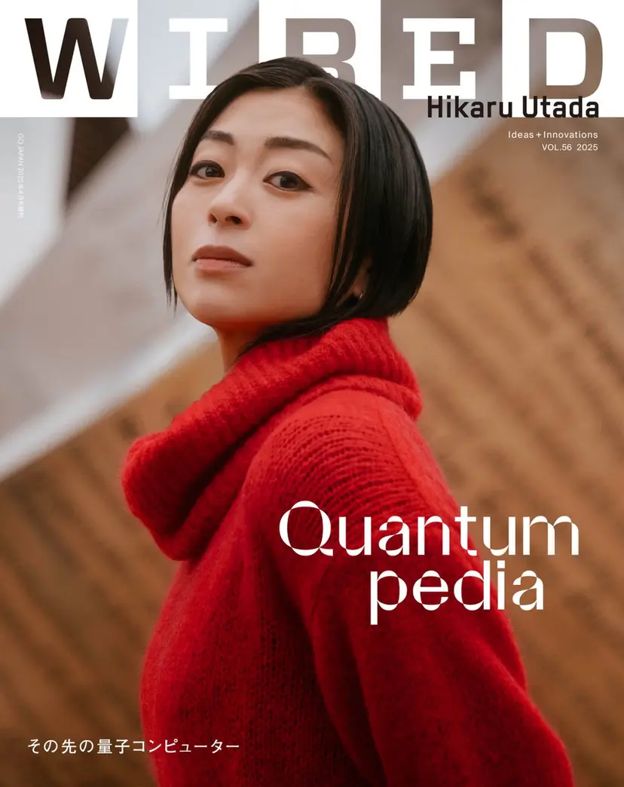

宇多田 ヒカル
N E W S
2025/3/19 MEDIA
宇多田ヒカル3月26日発売の『WIRED』日本版の表紙に初登場！ CERN（欧州原子核研究機構）を訪問したロングインタビューが掲載
宇多田ヒカルの最新曲「Electricity」。
24年発売の「SCIENCE FICTION」に収録され、今年に入ってもRemix楽曲のリリースが続きいまだなお盛り上がりを見せています。
そんななか、3月26日(水)発売の未来を実装するメディア『WIRED』日本版VOL.56「その先の量子コンピューター」の表紙に宇多田ヒカルが登場。
国連が国際量子科学技術年（IYQ）と宣言した2025年最初の発売号は、これからの社会に、文化に、産業に、量子コンピューターはいかなる変革をもたらすのか、総力を上げて特集。そのなかで宇多田ヒカルは『WIRED』日本版とともに素粒子物理の世界的研究拠点であるスイスのCERN（欧州原子核研究機構）に取材に同行。「『いつか行けたらいいな』とずっと憧れていた場所」で「コーチェラのメインステージに立つよりうれしいかもしれません（笑）」と語るCERNで、ふたりの日本人物理学者に誰よりも質問した宇多田ヒカル。
取材を通じて自身の創作活動と科学を重ね合わせ、「音楽をつくるプロセスは科学者のアプローチと限りなく似ているかもしれない」と語る宇多田の「CERN探訪記」は必読です。
〇『WIRED』日本版VOL.56「その先の量子コンピューター」https://wired.jp/article/quantumpedia-info/
<back to list